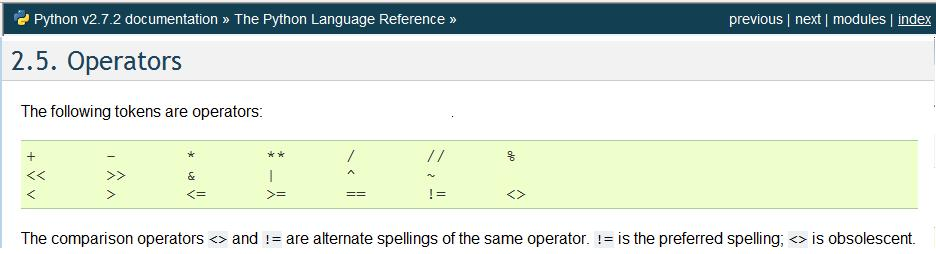
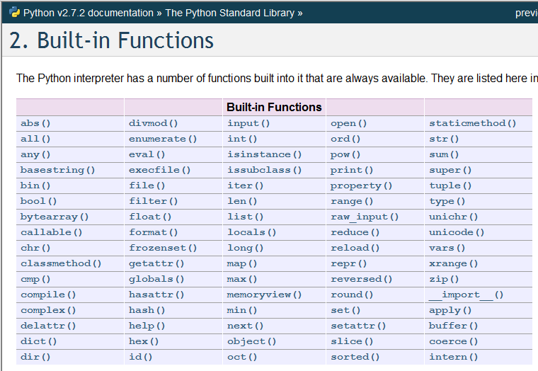

Esta obra esta protegida bajo una licencia de creative commons
Universidad de Panamá
2018
El lenguaje de programación Python cuenta con una buena cantidad de tipos de variables ('type'), funciones propias ('Built-in function'), comandos ('statement') y formas de fraccionar y ampliar esto creando nuevas funciones, objetos y módulos. Todo esto permite que se tengan incontables combinaciones para realizar códigos de programas.
En esta sección haremos un breve resumen de los elementos básicos del lenguaje que se han discutido en los capítulos precedentes de este documento.
Para el manejo de datos o información, el lenguaje Python cuenta con diferentes tipos de variables, de los cuales se presentaron en el capítulo 3 los siguientes:
>>>s = 'aqui'
>>>type(s)
<type 'str'>
>>>
>>>n = 10
>>>type(n)
<type 'int'>
>>>
>>>r = 3.2334
>>>type(r)
<type 'float'>
>>>
>>>c = 2+4j
>>>type(c)
<type 'complex'>
>>>
>>>L = True
>>>type(L)
<type 'bool'>
>>>Este tipo de variables se manejan en Python como objetos y disponen de sus propios métodos para cada uno de los tipos, los cuales se pueden invocar usando un punto después del nombre, por ejemplo:
>>> c.real
2.0
>>>r.as_integer_ratio()
(7280969517569881L, 2251799813685248L)
>>>.real es un método del objeto complejo c, mientras que .as_integer_ratio() es un método del objeto real r.
En el capítulo 6 se presentaron unos tipos de objetos o variables que permiten un manejo más simplificado de un grupo de datos, estos son:
>>>LL = ['a', 3, 2.5, True]
>>>type(LL)
<type 'list'>
>>>
>>>t = (2,'b',False, 4.8)
>>>type(t)
<type 'tuple'>
>>>
>>> D = {'primer':3.4, 'segundo':23, 'tercero': 'ultimo'}
>>> type(D)
<type 'dict'>
>>>
>>>CA = set([1,3,4])
>>>type(CA)
<type 'set'>
>>>Se dispone en Python de operaciones matemáticas para realizar con las variables numéricas, comparadores lógicos y operaciones de concatenación para variables tipo carácter. Estos operadores se muestran en la siguiente imagen:

Con los diferentes tipos de datos se pueden realizar procesos que están definidos en sus propios métodos o en funciones internas que están en Python. La próxima imagen muestra el listado de funciones propias ('bulit-in') disponibles en la versión 2.7.

Algunos ejemplos del uso de estas función se presentaron en el capítulo 7 para el manejo de entrada y salida de datos, tales como la función input() para ingresar datos, la función open() para conectar un archivo al ambiente de programación, la función raw_input() que también permite la entrada de datos desde el teclado, capturando la información como una secuencia simple de caracteres.
Se han presentado otros ejemplos de funciones tales como type(), que responde con el tipo de objeto que se tienen, la función dict() para generar diccionarios o la función str() para transformar el objeto en tipo carácter. Cada una de estas funciones tiene su aplicabilidad y su forma de uso que está explicado de forma extensa en la documentación oficial del lenguaje (Python, 2011e) o se puede consultar usando un navegador cualquiera de Internet donde se encuentra bastante información.
Los comandos para realizar comparaciones y ciclos se presentaron en el capítulo 3 de programación estructurada. Las palabras reservadas para estas instrucciones son:
>>>if para comparación simple
>>>if – elif para comparaciones múltiples
>>>for - in para programar ciclosEn los capítulos 4 y 5 se presentaron elementos para fraccionar los programas y adaptar el lenguaje a diferentes estilos o paradigmas de programación. Las palabras reservadas para estas instrucciones son:
>>>lambda para programar y asignar funciones en línea
>>>def para programar cualquier tipo de función con nombre propio
>>>class para generación de nuevos objetos
>>>import para incluir utilidades disponibles en otros archivos o programasLa documentación completa está en la referencia (Python, 2011e), pero la referencia (Gruet, 2011) presenta un resumen bastante bueno de los elementos de programación con Python, aunque a la fecha de consulta sólo se tenía hasta la versión 2.6. Sin embargo es una página para consulta rápida de todo lo fundamental del lenguaje de programación Python.
Esta obra esta protegida bajo una licencia de creative commons
Universidad de Panamá
2018